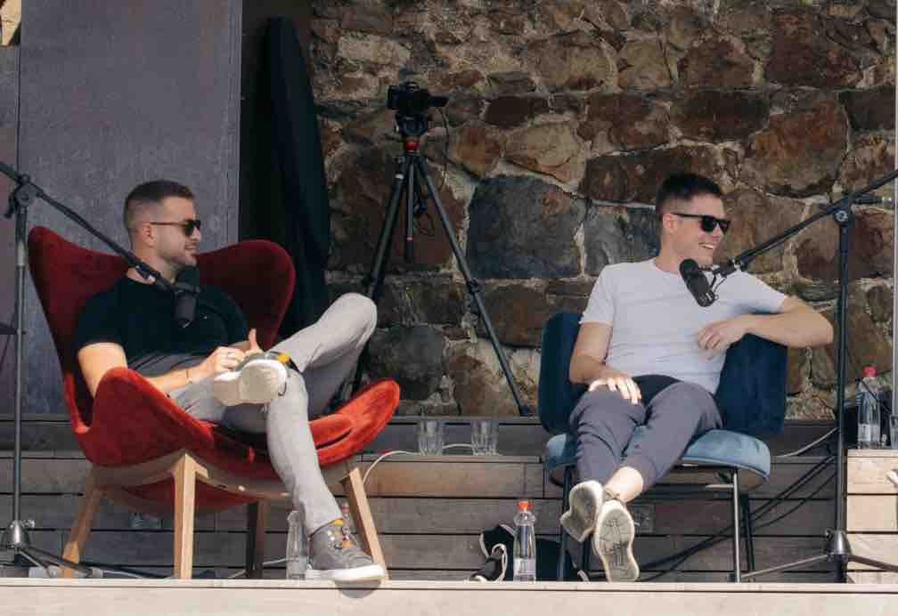

Ko tehnologija preseže državo: Astra AI z več kot 2 milijonoma uporabnikov po svetu

Člana strokovnega sveta Zavoda AI-D, Klemen Selakovič in Andrej Škraba, sta s projektom Astra AI dosegla izjemen mejnik: več kot 2 milijona uporabnikov, kar je več, kot ima prebivalcev Slovenija, in s tem jasno pokazala, da lahko znanje iz majhne države nagovarja ves svet.
Ob tej priložnosti smo z njima spregovorili o uspehu, UI, načrtih za prihodnost, strategiji, …
Ko število uporabnikov preseže število prebivalcev Slovenije, kaj je prvo vprašanje o prihodnosti, ki si ga zastavita kot ustanovitelja?
Astra AI ima danes več kot 2 milijona uporabnikov, vsak dan pa se nam pridruži približno 100.000 novih. Zgodba postaja veliko večja, kot sva si jo na začetku zamislila. Naše temeljno vprašanje pa ostaja nespremenjeno: kako omogočiti ‘1-na-1’ tutorstvo vsakemu človeku na svetu. V vsakem posamezniku se skrivajo potenciali, ki zaradi sistemskih omejitev (finančnih, geografskih, jezikovnih) nikoli ne pridejo do izraza. To je ogromna škoda za vse nas.
V koliko državah živi Astra AI? Kje jo uporabljajo največ?
Aktivno smo prisotni v več kot 20 državah. Slovenija, Nemčija, Francija, Španija, Italija, Mehika, Vietnam, Turčija in naprej. Uporabnike imamo dobesedno z vsega sveta, manjka nam samo še Tonga (smeh). Največja uporaba je trenutno v DACH regiji (Nemčija, Avstrija, Švica), ki je bila prva tuja regija, ki smo jo odprli poleg domače.
Kaj v praksi pomeni ta mejnik za vajino strategijo? Večji fokus na globalno širitev ali poglabljanje v obstoječe trge?
Oboje hkrati. Premikamo se zelo hitro. Produktna ekipa dela s polno paro neodvisno od marketinških aktivnosti, to nam omogoča, da širimo geografsko prisotnost in hkrati izboljšujemo izkušnjo za uporabnike. Naša strategija je država po država, globoko v lokalne učne načrte, v nativnem jeziku. To je naša prednost pred globalnimi konkurenti, ki poskušajo zajeti ves trg naenkrat.
AI pri Astri ne le pomaga, ampak dejansko spreminja način, kako se ljudje učijo. Kaj menita o tem?
Največje odkritje je bilo, kako močno vlogo ima sram pri tradicionalnem učenju. Učencu je neprijetno priznati nekomu, da nečesa ne razume; še posebej, če mora isto vprašanje zastaviti že desetič; AI-sistemu pa to brez zadržkov poveš. Ni obsojanja, ni nelagodja.
Učenec se lahko uči v svojem tempu, sprašuje brez strahu, AI tutor pa se prilagaja njegovi ravni razumevanja. Ne dajemo odgovorov, učimo razumevanja. Sokratski pristop, ki lahko prvič v zgodovini postane dostopen prav vsakomur.
Kje so danes največje tehnološke omejitve aktualnih AI modelov v izobraževanju?
Halucinacije so bile na začetku velik izziv. Model ti je včasih dal napačne odgovore, ker je hotel pomagati na vsak način. Interno temu rečemo, da je “hlinil samozavest.” To smo rešili s pristopom verificiranih virov: sistem deluje izključno na podlagi preverjene snovi. Trenutna natančnost je med 95 in 98 %, z razvojem dediciranih matematičnih modelov pa jo želimo dvigniti na 100 %. Poseben izziv ostaja geometrija. Prepoznavanje vizualnih vhodov in natančno risanje zahtevata napredek, ki ga še čakamo od temeljnih modelov.
Kaj se je izkazalo za najbolj učinkovit kanal? Performance, priporočila, šole, vplivneži?
Vse sile delujejo hkrati, a družbena omrežja, kjer živi naša ciljna skupina, so daleč najpomembnejši kanal. Na dan objavimo skoraj 1000 videov. Kombinacija TikToka, Instagrama in SEO-ja je temelj. Rast je posledica obojega: produkta, ki rešuje resen problem, in konsistentnega marketinškega dela. Beseda se širi tudi organsko, generacije dijakov povejo naprej mlajšim. Ko produkt dejansko pomaga, postane marketing veliko lažji.